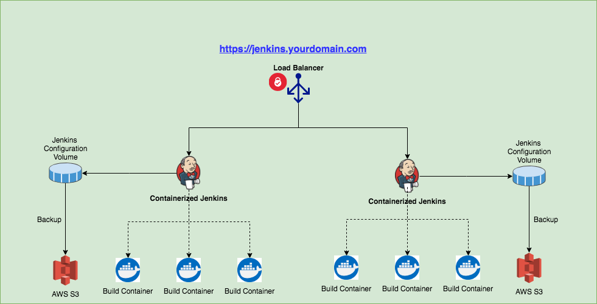

Jenkins 2 Pipeline as a Code
Denver Jenkins Area Meetup
Mayank Patel
Application Architect @ Oildex
Oildex
Software as a Service Provider for Oil and Gas companies
- 7.5 Years
Focused on
- Streaming, Reactive, Non-blocking Architecture
- API Design
- DevOps
- Cloud Native Architecture
- Empowering software development teams
- Digital Transformation and Digital Optimization
Agenda
- Overview of Jenkins 2
- Jenkins Pipeline Features
- Jenkins Environment
- Ideal Pipeline Flow
- Important pipeline plugins
-
Demo
- Setup and configure a pipeline
- Using Docker with pipelines
Overview of Jenkins 2
- Built-in support for delivery pipelines.
- Improved usability.
- Fully backwards compatible.
Jenkins Pipeline Features
Can support complex, real-world, CD Pipeline requirements: pipelines can fork/join, loop, parallel, to name a few programmatically
Is Resilient: pipeline executions can survive master restarts
Is Pausable: pipelines can pause and wait for human input/approval
Is Efficient: pipelines can restart from saved checkpoints
Is Visualized: Pipeline StageView provides status at-a-glance dashboards including trending
Pipeline configuration as a code in source control
Ability to embed Security part of DevOps pipeline
Reusability
Easy Recoverability
Jenkins Environment
Pipeline Flow
Important pipeline plugins
Demo
Jenkins Pipeline Sample
#!groovy
pipeline {
agent {
docker {
image 'jenkinsslave:latest'
registryUrl 'http://8598567586.dkr.ecr.us-west-2.amazonaws.com'
registryCredentialsId 'ecr:us-east-1:5348753459435-244656-34445-4545'
args '-v /home/centos/.ivy2:/home/jenkins/.ivy2:rw -v jenkins_opt:/usr/local/bin/opt -v jenkins_apijenkins:/home/jenkins/config -v jenkins_logs:/var/logs -v jenkins_awsconfig:/home/jenkins/.aws --privileged=true -u jenkins:jenkins'
}
}
environment {
APP_NAME = 'billing-rest'
BUILD_NUMBER = "${env.BUILD_NUMBER}"
IMAGE_VERSION="v_${BUILD_NUMBER}"
GIT_URL="git@github.yourdomain.com:mpatel/${APP_NAME}.git"
GIT_CRED_ID='fg4545454-18b6-4cd8-93ad-c456bfh5655e7fc'
REPOURL = '8598567586.dkr.ecr.us-west-2.amazonaws.com'
SBT_OPTS='-Xmx1024m -Xms512m'
JAVA_OPTS='-Xmx1024m -Xms512m'
WS_PRODUCT_TOKEN='e2fb83cd-f47f-496a-ae27-84ddd1e94df8'
WS_PROJECT_TOKEN='d4a8f42d55f94a50850b7c2dd5d6ea36b8d8dd10bfab450b9827662f39245c2a'
HIPCHAT_TOKEN = 'b454dfvdfg56c95465656722c9656576fgn563b0'
HIPCHAT_ROOM = 'Bots'
}
options {
buildDiscarder(logRotator(artifactDaysToKeepStr: '', artifactNumToKeepStr: '', daysToKeepStr: '10', numToKeepStr: '20'))
timestamps()
//retry(3)
timeout time:10, unit:'MINUTES'
}
parameters {
string(defaultValue: "develop", description: 'Branch Specifier', name: 'SPECIFIER')
booleanParam(defaultValue: false, description: 'Deploy to QA Environment ?', name: 'DEPLOY_QA')
booleanParam(defaultValue: false, description: 'Deploy to UAT Environment ?', name: 'DEPLOY_UAT')
booleanParam(defaultValue: false, description: 'Deploy to PROD Environment ?', name: 'DEPLOY_PROD')
}
stages {
stage("Initialize") {
steps {
script {
notifyBuild('STARTED')
echo "${BUILD_NUMBER} - ${env.BUILD_ID} on ${env.JENKINS_URL}"
echo "Branch Specifier :: ${params.SPECIFIER}"
echo "Deploy to QA? :: ${params.DEPLOY_QA}"
echo "Deploy to UAT? :: ${params.DEPLOY_UAT}"
echo "Deploy to PROD? :: ${params.DEPLOY_PROD}"
sh 'rm -rf target/universal/*.zip'
}
}
}
stage('Checkout') {
steps {
echo 'Checkout Repo'
git branch: "${params.SPECIFIER}", url: "${GIT_URL}"
}
}
stage('Build') {
steps {
echo 'Run coverage and CLEAN UP Before please'
// sh './sbt -Dsbt.global.base=.sbt -Dsbt.ivy.home=/home/jenkins/.ivy2 -Divy.home=/home/jenkins/.ivy2 compile coverage test coverageReport coverageOff dist'
sh '/usr/local/bin/opt/bin/sbtGitActivator; /usr/local/bin/opt/play-2.5.10/bin/activator -Dsbt.global.base=.sbt -Dsbt.ivy.home=/home/jenkins/.ivy2 -Divy.home=/home/jenkins/.ivy2 compile coverage test coverageReport coverageOff dist'
}
}
stage('Publish Reports') {
steps {
echo 'Publish Junit Report'
junit allowEmptyResults: true, testResults: 'target/test-reports/*.xml'
step([$class: 'FindBugsPublisher', canComputeNew: false, defaultEncoding: '', excludePattern: '', healthy: '', includePattern: '', pattern: 'target/scala-2.11/findbugs/report.xml', unHealthy: ''])
echo 'Publish Junit HTML Report'
publishHTML target: [
allowMissing: true,
alwaysLinkToLastBuild: false,
keepAll: true,
reportDir: 'target/reports/html',
reportFiles: 'index.html',
reportName: 'Test Suite HTML Report'
]
echo 'Publish Coverage HTML Report'
publishHTML target: [
allowMissing: true,
alwaysLinkToLastBuild: false,
keepAll: true,
reportDir: 'target/scala-2.11/scoverage-report',
reportFiles: 'index.html',
reportName: 'Code Coverage'
]
whitesource jobApiToken: '', jobCheckPolicies: 'global', jobForceUpdate: 'global', libExcludes: '', libIncludes: '', product: "${env.WS_PRODUCT_TOKEN}", productVersion: '', projectToken: "${env.WS_PROJECT_TOKEN}", requesterEmail: ''
}
}
stage('SonarQube analysis') {
steps {
sh "/usr/bin/sonar-scanner"
}
}
stage('ArchiveArtifact') {
steps {
echo 'Archive Artifact'
archiveArtifacts '**/target/universal/*.zip'
}
}
stage('Docker Tag & Push') {
steps {
script {
branchName = getCurrentBranch()
shortCommitHash = getShortCommitHash()
IMAGE_VERSION = "${BUILD_NUMBER}-" + branchName + "-" + shortCommitHash
sh 'eval $(aws ecr get-login --no-include-email --region us-west-2)'
sh "docker-compose build"
sh "docker tag ${REPOURL}/${APP_NAME}:latest ${REPOURL}/${APP_NAME}:${IMAGE_VERSION}"
sh "docker push ${REPOURL}/${APP_NAME}:${IMAGE_VERSION}"
sh "docker push ${REPOURL}/${APP_NAME}:latest"
sh "docker rmi ${REPOURL}/${APP_NAME}:${IMAGE_VERSION} ${REPOURL}/${APP_NAME}:latest"
}
}
}
stage('Deploy - CI') {
steps {
echo "Deploying to CI Environment."
}
}
stage('Deploy - QA') {
when {
expression {
params.DEPLOY_QA == true
}
}
steps {
echo "Deploy to QA..."
}
}
stage('Deploy - UAT') {
when {
expression {
params.DEPLOY_UAT == true
}
}
steps {
echo "Deploy to UAT..."
}
}
stage('Deploy - Production') {
when {
expression {
params.DEPLOY_PROD == true
}
}
steps {
echo "Deploy to PROD..."
}
}
}
post {
/*
* These steps will run at the end of the pipeline based on the condition.
* Post conditions run in order regardless of their place in pipeline
* 1. always - always run
* 2. changed - run if something changed from last run
* 3. aborted, success, unstable or failure - depending on status
*/
always {
echo "I AM ALWAYS first"
notifyBuild("${currentBuild.currentResult}")
}
aborted {
echo "BUILD ABORTED"
}
success {
echo "BUILD SUCCESS"
echo "Keep Current Build If branch is master"
// keepThisBuild()
}
unstable {
echo "BUILD UNSTABLE"
}
failure {
echo "BUILD FAILURE"
}
}
}
def keepThisBuild() {
currentBuild.setKeepLog(true)
currentBuild.setDescription("Test Description")
}
def getShortCommitHash() {
return sh(returnStdout: true, script: "git log -n 1 --pretty=format:'%h'").trim()
}
def getChangeAuthorName() {
return sh(returnStdout: true, script: "git show -s --pretty=%an").trim()
}
def getChangeAuthorEmail() {
return sh(returnStdout: true, script: "git show -s --pretty=%ae").trim()
}
def getChangeSet() {
return sh(returnStdout: true, script: 'git diff-tree --no-commit-id --name-status -r HEAD').trim()
}
def getChangeLog() {
return sh(returnStdout: true, script: "git log --date=short --pretty=format:'%ad %aN <%ae> %n%n%x09* %s%d%n%b'").trim()
}
def getCurrentBranch () {
return sh (
script: 'git rev-parse --abbrev-ref HEAD',
returnStdout: true
).trim()
}
def isPRMergeBuild() {
return (env.BRANCH_NAME ==~ /^PR-\d+$/)
}
def notifyBuild(String buildStatus = 'STARTED') {
// build status of null means successful
buildStatus = buildStatus ?: 'SUCCESS'
def branchName = getCurrentBranch()
def shortCommitHash = getShortCommitHash()
def changeAuthorName = getChangeAuthorName()
def changeAuthorEmail = getChangeAuthorEmail()
def changeSet = getChangeSet()
def changeLog = getChangeLog()
// Default values
def colorName = 'RED'
def colorCode = '#FF0000'
def subject = "${buildStatus}: '${env.JOB_NAME} [${env.BUILD_NUMBER}]'" + branchName + ", " + shortCommitHash
def summary = "Started: Name:: ${env.JOB_NAME} \n " +
"Build Number: ${env.BUILD_NUMBER} \n " +
"Build URL: ${env.BUILD_URL} \n " +
"Short Commit Hash: " + shortCommitHash + " \n " +
"Branch Name: " + branchName + " \n " +
"Change Author: " + changeAuthorName + " \n " +
"Change Author Email: " + changeAuthorEmail + " \n " +
"Change Set: " + changeSet
if (buildStatus == 'STARTED') {
color = 'YELLOW'
colorCode = '#FFFF00'
} else if (buildStatus == 'SUCCESS') {
color = 'GREEN'
colorCode = '#00FF00'
} else {
color = 'RED'
colorCode = '#FF0000'
}
// Send notifications
hipchatSend(color: color, notify: true, message: summary, token: "${env.HIPCHAT_TOKEN}",
failOnError: true, room: "${env.HIPCHAT_ROOM}", sendAs: 'Jenkins', textFormat: true)
if (buildStatus == 'FAILURE') {
emailext attachLog: true, body: summary, compressLog: true, recipientProviders: [brokenTestsSuspects(), brokenBuildSuspects(), culprits()], replyTo: 'noreply@yourdomain.com', subject: subject, to: 'mpatel@yourdomain.com'
}
}
Classic Pipeline Stage View
Blue Ocean Pipeline Stage View